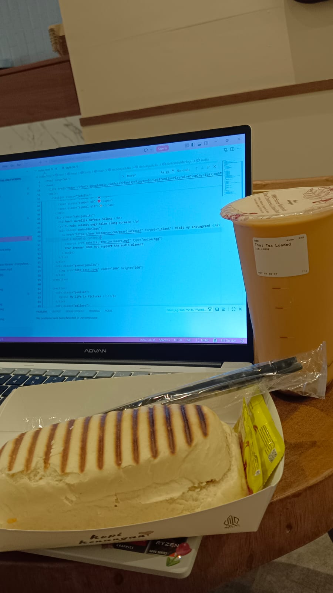

blog entry 004 --
Women & Vanity
Why do you think women care so much about their appearances? Why is this so widely done, that it is considered a stereotype?
Read more.
blog entry 003 --
Being Okay with Being Alone
I do pretty much everything alone. So long as public transport exists, I can go to the ends of Earth. Between those times, I think to myself about how lonely I feel.
Read more.
blog entry 002 --
Scholarship: Who Deserves One?
After being accepted into Bakti Champions BCA scholarship, I think I have an answer.
Read more.
blog entry 001 --
3D Modeling & Animating
I picked up 3D modeling around a year ago. Today, I'm the coordinator for the 2D/3D division of a campus organization.
Read more.